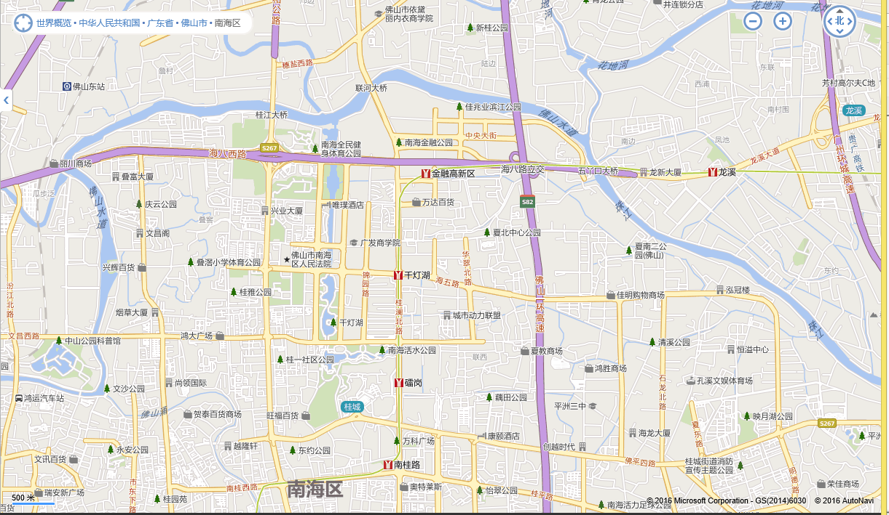

地图(我感兴趣的区域):

2016/2/18
TD2016(NH)WG0003 佛山市南海区桂城街道天佑二路7、9、11、13号地段
佛山市南海威通有限公司 楼面价 3965元/平方米(=4275万/面积3850.6/容积率2.8)
旧区 旁边没有大公园 虽然靠近桂城地铁站 但是因为南海大道交通很塞车
教育: 桂城中心小学
2016/1/07
TD2015(NH)WG021 南海区桂城街道广东金融高新技术服务区B区03-02-08地块
创新蓝绿投资（北京）有限公司 楼面价 11539元/平方米(=166877万/面积48207.7/容积率3.0)
城镇住宅用地兼容批发零售用地
2016/1/22
TD2015(NH)WG018 南海区桂城街道海三路南侧、南一路东侧地段
佛山市时代鸿泰投资有限公司 楼面价 9662元/平方米(=85466万/面积35382.9/容积率2.5)
城镇住宅用地兼容批发零售用地
2015/10/26
地块编号 TD2015(NH)WG014 南海区桂城街道海八路北侧63号地段
万科 楼面价 8845.33元/平方米(=186410万/面积70248平方米/容积率3.0).
楼盘名称：万科金色城市 2梯6户 35层 90方-120方 户型不错
位置：海八路+桂江立交; 靠近 全民健身公园 千灯湖 北边是河
教育 自带幼儿园 小学可能是新的灯湖小学
交通 位置不错 但是可能桥底塞车
2015/10/21
地块编号 TD2015(NH)WG013 佛山市南海区桂城街道广东金融高新技术服务区B区03-02-10、03-02-11地段
奥园集团 楼面价 10917元/平方米(=108690万/面积33185.9/容积率3).
2015/8/31
地块编号 TD2015(NH)WG011 佛山市南海区桂城街道气象路16号地段
http://www.fsggzy.cn/tdjy/td_jygg/tdgggq/td_ggnh/201507/t20150731_5365725.html
万科 楼面价7849.15元/平方米 起拍楼面价为6180.27元/㎡ 5112平方米(不大)
位置：桂城街道 灯湖西路+海三路 交界 在千灯湖和雷岗公园旁边 车位要停远点 附近教育资源不错.
2015/3/13
地块编号 TD2015(NH)WG001 佛山市南海区桂城街道桂澜路以东地段
保利 楼面价 5991 = 33300万/18526.5平方/容积率3.0 城镇住宅兼容批发零售用地
位置: 桂澜路以东+海三路以南 亿能国际广场南边+中海寰宇天下北边
靠近地铁 这位置挺好的 教育可能是灯湖小学
信息来源Reference:
南海区公共资源交易网>交易信息>土地交易>交易公告 可以看到具体的位置面积等信息 从2014年开始.
南海区公共资源交易网>交易信息>土地交易>结果公告 可以看到交易结果
http://www.nhcet.com/cms/html/10802/column_10802_1.html
题外话:
南海区公共资源交易网>交易信息 这里还可看到：工程招投标 and 政府采购等信息, 很有意思.
佛山市国土资源和城乡规划局 http://www.fsgtgh.gov.cn/ 这里面的"政务公开", "城乡规划", "地价管理" 很有意思, 其中"地价管理>城市地价动态监测"有2011年开始每季度的数据.